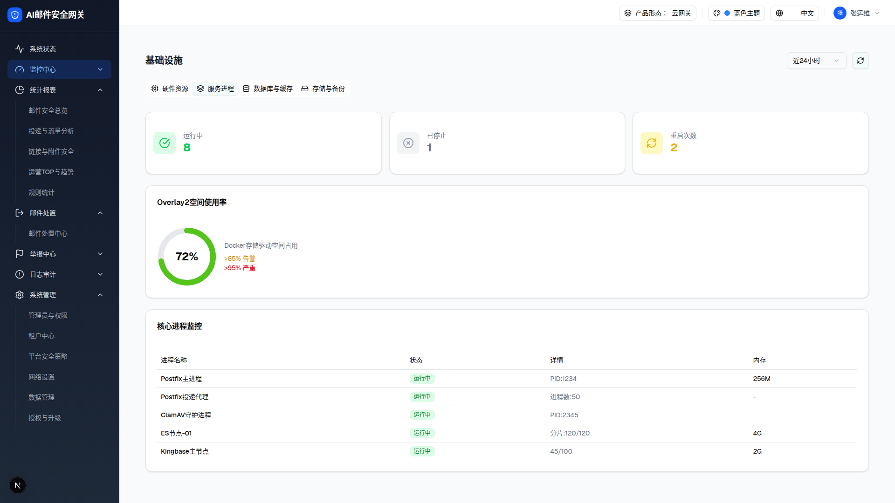

| 所属组件 | 2.2 Tab 导航 |
| 主文件 | monitor-infrastructure/index.html |
| 触发路径 | 层级0 → 点击「服务进程」Tab（Layers 图标）→ setActiveNav("container") |

Docker存储驱动空间占用
>85% 告警
>95% 严重
| 进程名称 | 状态 | 详情 | 内存 |
|---|---|---|---|
| Postfix主进程 | 运行中 | PID:1234 | 256M |
| Postfix投递代理 | 运行中 | 进程数:50 | - |
| ClamAV守护进程 | 运行中 | PID:2345 | |
| ES节点-01 | 运行中 | 分片:120/120 | 4G |
| Kingbase主节点 | 运行中 | 45/100 | 2G |
| 子区块 | 元素 | 实测值 | 说明 |
|---|---|---|---|
| Docker 状态卡（grid-cols-3） | 运行中 | 8（绿字，CheckCircle 图标） | monitor.container.running |
| 已停止 | 1（灰字，XCircle 图标） | monitor.container.stopped | |
| 重启次数 | 2（黄字，RefreshCw 图标） | monitor.container.restarts | |
| Overlay2 空间使用率 | SVG 环形图 | 72%（绿色弧；>85% 黄、>95% 红） | strokeDasharray = 72×3.52 / 352；右侧文字说明阈值 |
| 核心进程监控表 | Postfix主进程 | 运行中 · PID:1234 · 256M | 状态列渲染 getStatusBadge：running/green → 绿徽标「运行中」；详情列按 pid/count/virusDb/shards/connections 优先级取值 |
| Postfix投递代理 | 运行中 · 进程数:50 · - | ||
| ClamAV守护进程 | 运行中 · PID:2345 · （内存列空） | ||
| ES节点-01 | 运行中（green）· 分片:120/120 · 4G | ||
| Kingbase主节点 | 运行中 · 45/100 · 2G |
| 比对项 | demo 实际 DOM | 提取的 HTML | 是否一致 |
|---|---|---|---|
| 卡片数 | 5（3 状态卡 + Overlay2 + 进程表） | 5 | ✅ |
| 进程表行数 | 5 | 5 | ✅ |
| 状态徽标数 | 5（全绿「运行中」） | 5 | ✅ |
| 环形图 | SVG 双 circle（底环 + 72% 弧） | 同 | ✅ |